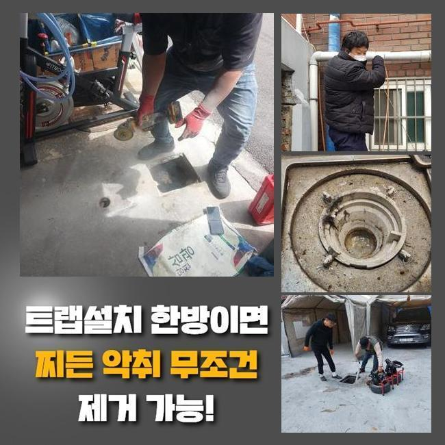
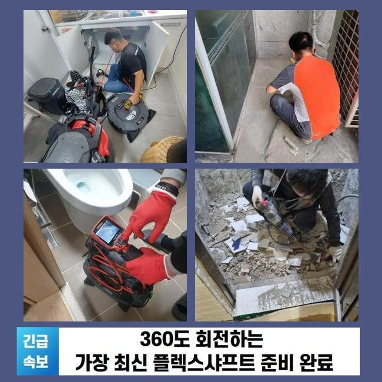
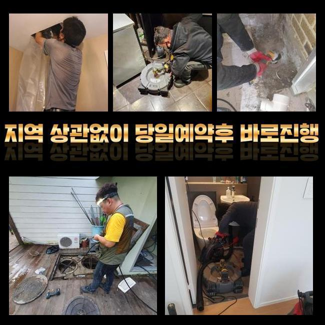
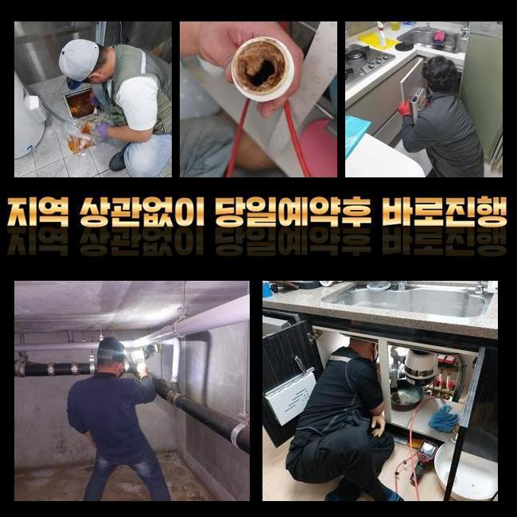
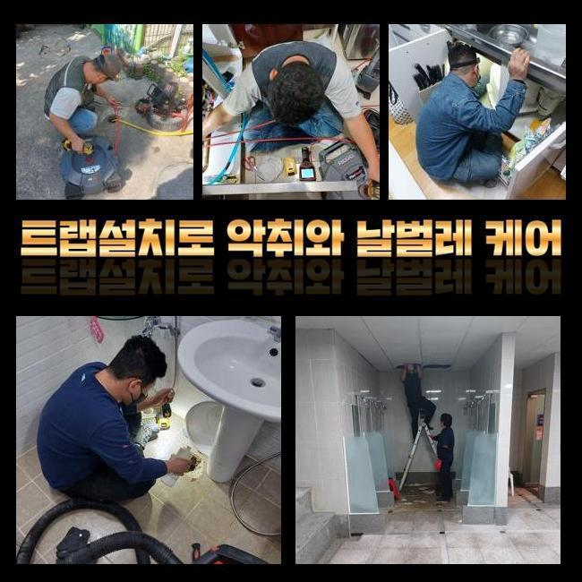
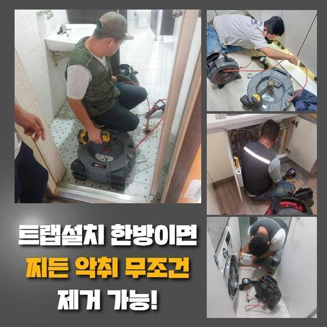

🏠 부천 고강본동씽크대배수구역류 신흥동 하수구뚫는비용 설비출장
용인 싱크대막힘 전문 시공 후기

📋 작업 개요
- 위치: 용인
- 서비스 유형: 싱크대막힘, 변기막힘, 하수구막힘, 배관막힘, 누수수리, 역류해결, 뚫는업체, 배관청소, 고압세척, 악취차단
- 작업 일시: 2025. 4. 9. 21:16
- 업체명: 하수구수사대 (010-5615-2118)
🔍 문제 상황
부천 고강본동씽크대배수구역류 신흥동 하수구뚫는비용 설비출장
하수관이 차단되는 사태는 한번쯤은 경험하셨으리라 생각하는데요
갑작스레 주방쪽이나 화장실의 변기에서 생기는 관로막힘은 평상시 생활에 고충을 야기하게 되는데요
그럼 주방시설에선 어떠한 연유로 정체가 일어나는것인지 알아볼 필요가 있겠죠
주방공간은 요리할때 발생되는 각종 오염물질과 기름슬러지와 같은 것들이 배수관에 적체되어 차단이 되는건데요
이런 상황이 지속되면 배수가 안되는것은 물론이고 오취가 올라오게 되고 노폐물들로 인해 관로가 노화되어서 더욱 커다란 트러블을 촉발할수 있어요
보통 해당 사태가 생겼다면 시중의 제품을 사용하여 해결해보려 시도하시는데요
다만 해당 대책은 짧은 시간의 사용만 유지하게 만들어줄뿐 원적적인 요소를 없애지 않는다면 막힘이 재발하기 쉽습니다
막힘 사유가 관의 밑부분에 존재한다면 일반인이 쉽게 목도하거나 소멸시키기 힘듭니다
거기에 더해 서툴게 수리를 한다면 되레 상황을 악화시켜 잔재들을 적절히 처리하지 못하게되는 거죠
그렇기에 배관에서 트러블이 일어났다면 전문가에게 의뢰하여 명확하고 깨끗하게 해결하는게 마땅합니다

🔎 원인 분석
💡 전문가 진단: 정밀 진단 장비를 사용하여 슬러지의 고착 여부를 판명하고 타격/세척 작업을 실시했습니다.
그저께 저희들은 배관문제 이슈로 시공문의를 받았어요
고객께선 화장실의 물막힘으로 역류 및 악취발생이 심하여 평상시 생활에 고충을 겪는 중이셨어요
냄새가 너무 심해서 집안에 있기가 힘들어졌고 역류현상까지 생겨 집안이 오손되는 사태에 닿게 됐다 말하셨습니다
의뢰자의 어려움을 되도록 빨리 처리하기 위해서 곧바로 말씀하신 곳으로 이동했죠
현장으로 이동후 의뢰인과 이야기를 나누고 발발한 문제점을 자세하게 조사하였어요
고객님은 욕실에서 하수가 빠져나가지 못하고 위로 올라오는 상황에 이르러 공간이 오염되어버린 사태라며 조속한 처리를 원하셨습니다
열흘전부터 막힘이 생겼는데 놔뒀더니 더더욱 심각해진 모습이었답니다
그러할때 간단하게 통수를 진행하는걸로는 상황을 극복하기 어려워요
오염물질이 배수관에 강력히 고착화되어 있는거라서 내부의 모습을 확실하게 파악한뒤에 적합한 기기와 방식을 토대로 공정에 임해야 됩니다
내부에서 생겨난 트러블은 직시하여 조사하기 어려울 때가 많답니다
그래서 저희 측은 배관카메라를 이용하여 배수관내측의 정황을 정밀하게 검사하게 되었던거죠
내시경기기로 조사해보았더니 파이프 내부엔 장시간 누증된 음식 잔재들과 유분찌꺼기들이 뒤섞여 관로를 철저하게 가로막고 있었답니다

🔧 작업 과정
또 잔재들이 견고하게 자리를 잡아서 간소하게 고압청소만 하여서는 처치가 어려웠답니다
배수관 관측을 마무리한뒤 샤프트기계를 동원하여 배수관에 단단하게 들러붙은 잔재들을 처치하는 시공을 속행했어요
샤프트 기계는 관로안에 누적된 슬러지 등을 재빠르게 와해시키고 정리하게 만드는 기기로 내부 침전물들이 움직이지 않는 상황에서 큰 가치를 발휘하죠
플렉스샤프트는 강력한 회전으로 고형물을 작게 깨뜨려서 배관면에 체류중인 뻣뻣한 기름찌꺼기나 각종 노폐물들을 안전히 소멸시킬수 있어요
그렇긴하지만 조절을 잘못하여 파쇄해 나간다면 하수관이 망가질수 있어서 충분한 노하우와 주의깊은 시공이 요망되죠
본 지점은 또한 침전물들이 배관에 견고하게 자리잡은 경우였기에 한두번의 작업으론 정비를 완수하기 힘겨웠죠
배관 군데군데 쌓여있는 석회찌꺼기는 더욱더 그러한 사태를 어렵게했고요
그렇기에 저흰 고압세척장비와 샤프트기기를 병행 사용하면서 이물들을 정리하고 안전히 제거하는 작업을 시행하였습니다
고압으로 슬러지를 없앨때는 그것들이 주위로 퍼지지 못하게끔 주의를 기울여야 해요
오물들이 흩어져 근방이 매우 더러워진다면 처치가 어려워지기도 하므로 섬세한 시공이 필요한거죠
그러므로 시공중에 그런 사태들을 방지하려 보호작업을 시행했고 고객님이 우려하지 않으시도록 세심하게 과정을 시행하였죠
이물을 전부 처리한뒤 재차 배관카메라를 집어넣어 관로를 점검했어요
여전히 제거가 안된 석회성분이나 이차적인 고장여부를 점검하는건 대단히 중요하다고 볼수 있어요
금번 시공에선 수회 관 내측을 조사하고 부가적으로 발현가능한 문제점을 예방하였죠
전반적으로 노폐물들이 소멸된걸 검증한뒤 하수를 내리며 통수가 올바르게 됐는지 테스트해 보았죠
온전히 물이 빠지는걸 직관적으로 입증하였죠
배수문으로 오수가 원만하게 사라지는걸 의뢰자께도 확인시켜드렸고 분명하게 수리되었다는걸 확인하였죠
상황을 방치하여 침전물이 한층더 늘어난다면 주변이웃들에게 고장상황이 전가될수도 있어요
그러한 상황에서는 생각해야한 내용이 더더욱 증가할수 있어서 서둘러서 수리를 받아보시는게 좋아요


✅ 작업 완료
그리고 하수구막힘은 일상을 영위하시는데 고충을 발생시키므로 가급적이면 재빠르게 처리해야 돼요
하수관 정체가 증대된다면 위생적인 문제를 줄뿐만 아니라 누수까지 생겨날수 있단 사실도 인지하고 있어야 하겠죠
공정을 시작하기 전에는 필수로 적합한 장비들을 소지해두어야 하겠습니다
그것들이 충분히 없는경우 관측을 올바르게 못할수가 있으며 시간적 손실까지 야기할수 있습니다
배관에 일어난 문제들로 해결이 시급하다면 저희들에게 부담없이 문의해 주십시오



⚠️ 베란다 누수 및 방수 관리 방법
- ✅ 비가 많이 올 때 창틀 주변이나 아래층 천장에 얼룩이 생기는지 정기적으로 확인해 보세요.
- ✅ 우수관 주변 실리콘 마감이 들뜨거나 깨진 틈새가 있는지 손상 여부를 수시로 체크하세요.
- ✅ 베란다 바닥 타일의 줄눈(메지)이 소실되면 그 틈으로 물이 침투하여 누수가 유발됩니다.
- ✅ 누수 의심 증상 발견 시 방치하면 아래층 손실이 커지므로 즉시 전문가의 진단을 받으십시오.
💡 핵심 정리
- 확실한 장비 작업(내시경 점검 및 샤프트 스케일링)으로 원인을 뿌리 뽑습니다.
- 작업 후 1년 이내에 동일한 부위 재발 시 100% 무상 A/S 서비스를 보장합니다.
- 서울 · 경기 · 인천 전 지역에 24시간 언제든 긴급 출동할 수 있도록 항시 대기 중입니다.
❓ 자주 묻는 질문 (FAQ)
🚨 용인 싱크대막힘 문제로 고민이신가요?
정확한 원인 진단과 확실한 시공으로 재발 없는 해결을 약속드립니다.
24시간 긴급 출동 | 서울 · 경기 · 인천 전지역 | 1년 내 재발 시 무상 A/S